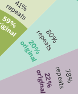
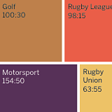
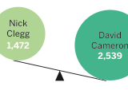

A Pocket Guide To BBC TV 2010
- 
- 
- 
The Pocket Guide to BBC TV 2010 was a printed review of a year's worth of data about BBC television, collected via the Channelography project.
Within the short booklet, we picked out key stories, and illustrated them using beautiful infographics and data visualisations.
Amongst the panels in the booklet are the revelations that more hours of snooker were broadcast than tennis, and that Family Guy was the most-repeated show of the year.
The guide was distributed amongst BBC staff and used as a talking point within the R&D team.